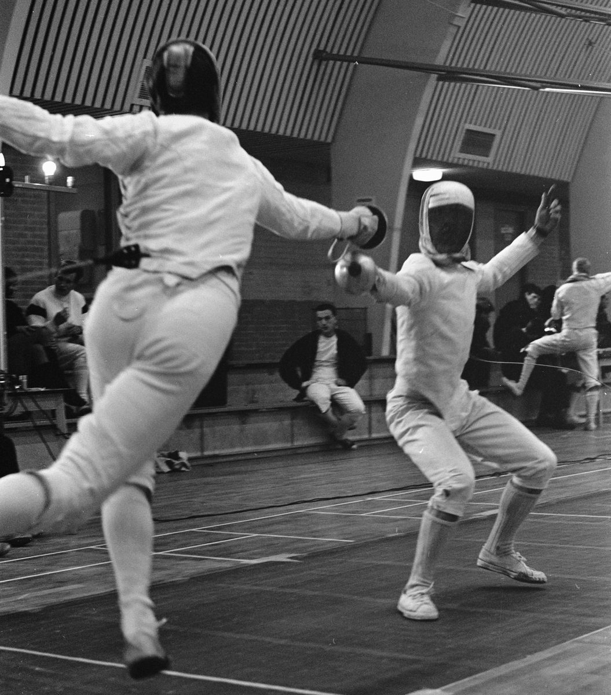

Vet Worlds, Part Two: Two World Titles for U.S. Women
The U.S. women’s epee veterans left the Veteran World Championships in Tbilisi, Georgia, with two world titles and four individual medals.
Leslie Marx led the way in Veteran 50, working through an 83-fencer field and beating Belgium’s Nathalie Vandewalle 10-4 in the final. The FIE says it was her first title in the event since 2017.
The Veteran 40 gold came down to one touch. Cassandra Bates lost the final 10-9 to Julia Ashchuk and took silver, and Lacey Biniak, who fell to Ashchuk 10-8 in the semifinals, took bronze. That gave the U.S. two of the four medals in a 63-fencer field. In Veteran 70, Charlotta Bowie won bronze after a 10-7 semifinal loss to Germany’s Astrid Kircheis, the eventual champion.
Then came the team event. In a field of 19 teams, the U.S. beat Italy 45-40 in the semifinals and France 45-31 in the final for gold.
The championships, held Oct. 9–17, drew 1,273 athletes from 65 nations. The women’s epee events ran Oct. 12–14.
Controversial Calls: The Touch Only the Referee Thought She Saw
Editor’s note: The fencer in this story is the editor’s son.
The light went on, and the argument started. In a pool bout at a national tournament two years ago, an Elite FC fencer’s opponent scored a touch that, the fencer’s family says, landed off the strip. The fencer said the blade never hit him.
By the family’s account, the opponent waved a hand to signal no touch, the Elite FC coach pointed that out on the spot, and neither the opponent’s coach nor family said a word in the touch’s defense. The only person who thought it was a touch, the family says, was the referee, who said she thought she saw it hit. The fencer made a formal appeal, and the Head Referee came over and ruled that it was the referee’s call. Pools had no video replay. The fencer lost the bout by one touch.
On paper, a hit that misses the fencer shouldn’t count. In epee, touches “made on the ground where it is not insulated” are disregarded (t.93), and a touch that lands on the strip and registers is annulled (t.94.1). The catch is who decides whether it landed. That is a “point of fact,” and against a point of fact “no appeal can be made” (t.172.1). An appeal can challenge only how a rule was applied, and the Head Referee settles it (t.172.2, t.174). No rule we found gives an opponent’s signal any formal weight.
Both sides (opinion). For the call: the referee judges from where she stands, and making her view final keeps bouts from being re-argued touch by touch. Against it: when the fencer who scored signals a miss, a referee who only thought she saw a hit has a thin basis for a decisive touch.
The verdict: judgment call. On the family’s own account, the Head Referee applied the rules correctly. A referee’s view of a hit can’t be appealed, no matter how differently it looked from the side of the strip.
For parents, the lesson is narrow but useful. You can’t appeal what a referee saw, only how a rule was applied. Only the fencer can appeal, and it has to happen right away, before the next touch. At national tournaments today, video replay is guaranteed only in later direct-elimination rounds (from the round of 16 or 8, depending on the event), not in pools. And a parent’s phone video doesn’t count.
World No. 1’s Message to His Future Self
After a quarterfinal loss at the Tokyo Olympics, Egypt’s Mohamed Elsayed recorded a private video message to himself: a promise that came true with a bronze medal at Paris 2024, Egypt’s first Olympic fencing medal in 12 years. Now ranked No. 1 in the world in men’s epee, he tells Team USA epeeist Ari Simmons the story on the FIE’s podcast “The Will to Win” (Episode 3). His advice: “Fencing is like life. There’s always a comeback in life, and there’s always a comeback in fencing.” Listen on the FIE’s YouTube channel.
1965: Club Epee, With Everyone Close Enough to Watch

Laurens van Tiggele, left, faces Raoul Popken at the Dutch national team epee championship in Amsterdam’s Oude RAI on Nov. 21, 1965. The winning club was Zaal Abrahamse of The Hague; spectators and another bout fill the space behind the two fencers.
Look closely and a body cord trails from the nearest fencer.
Photo: unknown photographer / Anefo, Nationaal Archief, collection 2.24.01.05, no. 918-4711 (Nov. 21, 1965). CC0 1.0 (https://creativecommons.org/publicdomain/zero/1.0/). Full-resolution JPEG converted from the archive’s original TIFF. Cropped. Source: https://commons.wikimedia.org/wiki/File:Duel_tussen_Van_Tiggele_(links)_en_Popken,_Bestanddeelnr_918-4711.jpg.